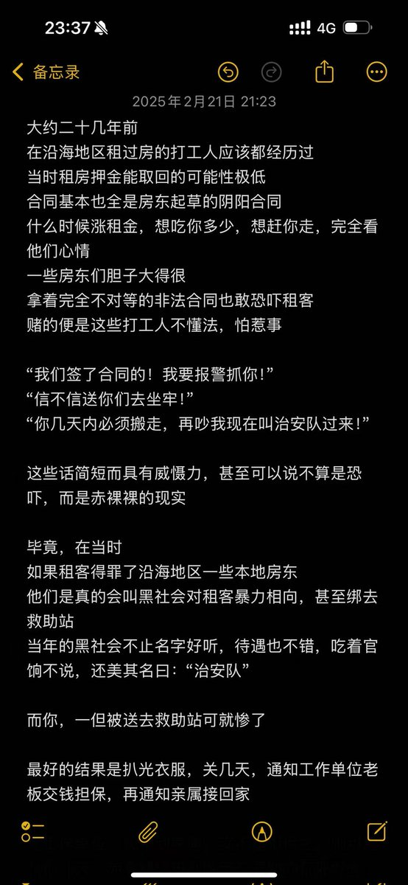

基于“维稳”而非“法治”的逻辑治理社会的恶果就是：固然这种“维稳”的逻辑短期内在部分方面带来了行政效率的提高和社会治理成本的降低，但是它客观上造成了整个社会的“弱肉强食”的加剧，让更多弱势群体的权益（包括生命权）受到了严重的欺凌，你从我本人的做事逻辑就可以感受出，因为合法维权手段的高昂成本（或者说整套社会运行逻辑的方式造成的“政府不希望”基层矛盾以法律方式解决），更有效的做法反而遵循“枫桥经验”，基层的利益争夺更多陷入弱肉强食的逻辑，一味遵循法律和按照规则逻辑办事的人输得一败涂地（包括很多进入中国社会后有离开，或最终“本土化”的欧洲企业）。从长期来看，一味追求社会总体效率的做法，严重加剧了强者对弱者的霸凌。也不会出现这么多需要救助的死亡边缘的自杀者。



@_lekous_ @FFFFJUN @Light_ASPH 大陆这边会存在一个《流动人口登记》条例（参考深圳的人员流动管理条例，自住房屋和租赁房屋的主体分别是业主或租赁人，使用同样的人员流动登记标准）。… https://t.co/IuO5tKlhMx